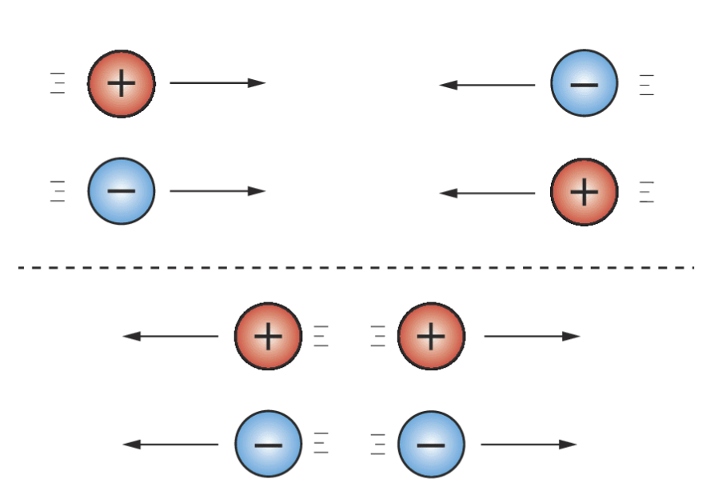
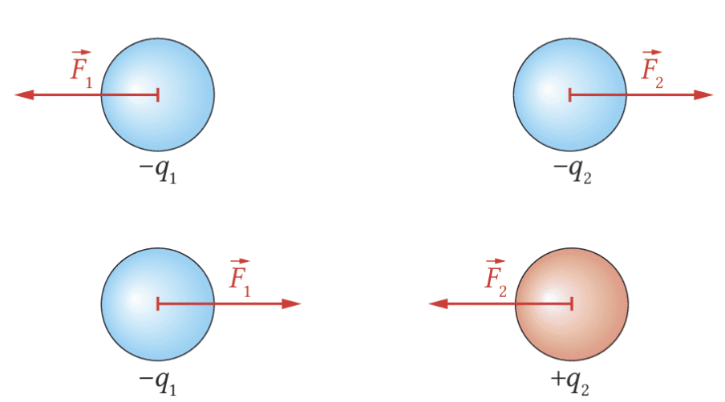
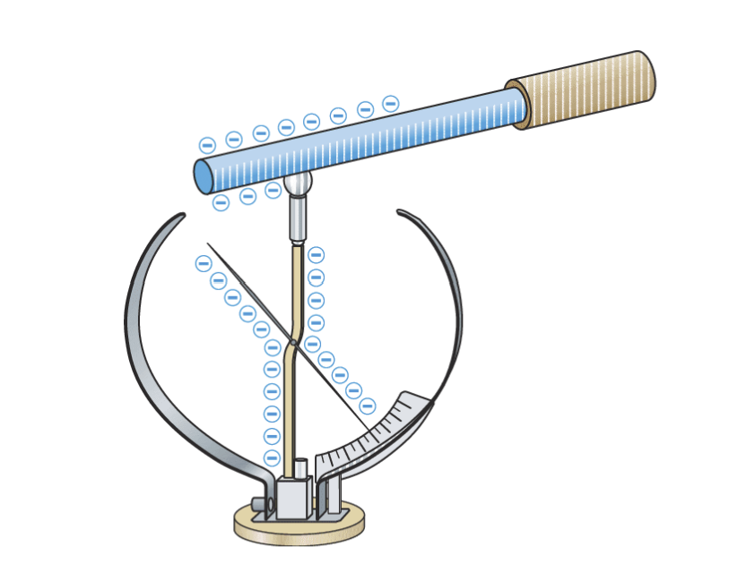
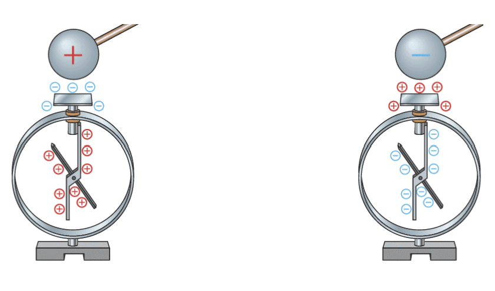
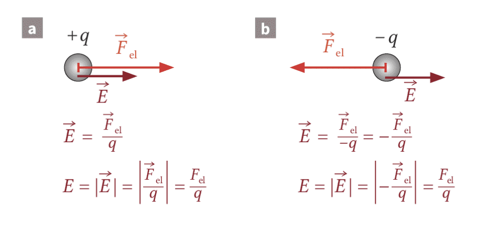
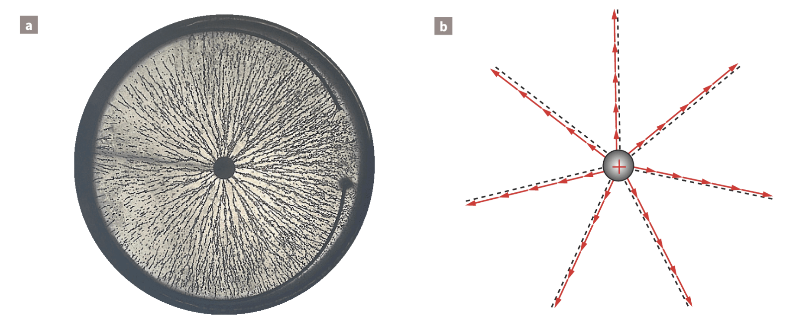
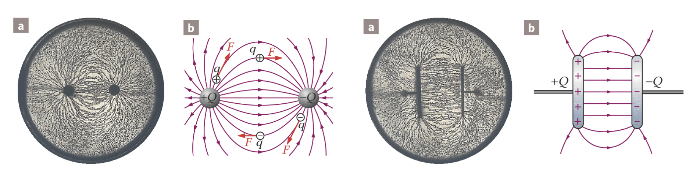
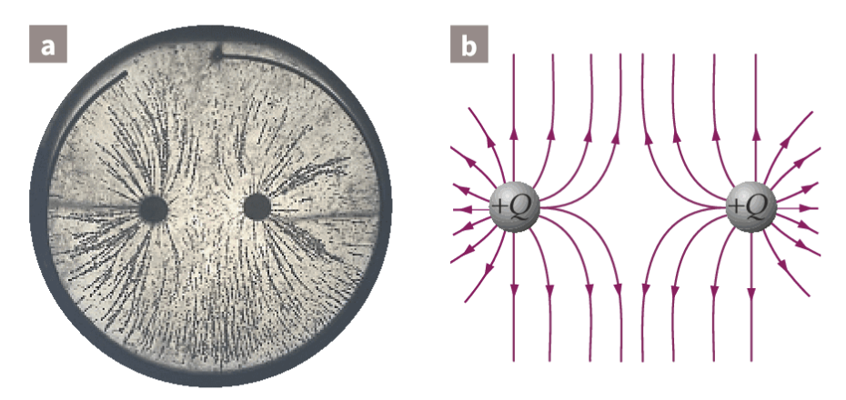
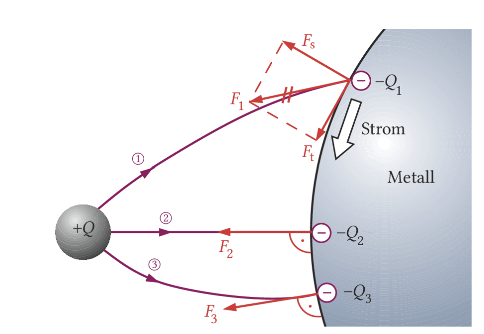
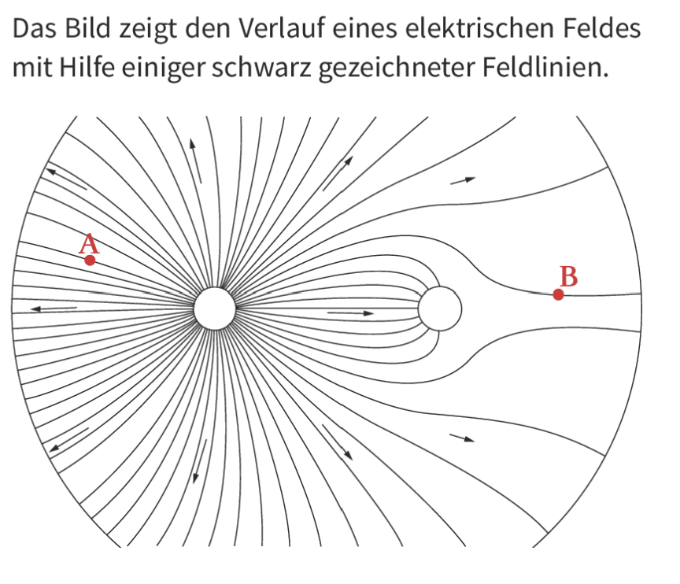

Du lernst hier, wie Ladungen wirken, wie man sie nachweist und warum man den Raum um geladene Körper als elektrisches Feld beschreibt.
Elektrische Wirkungen sind oft unsichtbar. Verpackungschips kleben an der Haut, Haare stehen beim Bandgenerator ab, Blitze springen durch die Luft, und ein Elektroskop zeigt eine Ladung an, ohne dass du einzelne Elektronen sehen kannst. Die Physik beschreibt solche Vorgänge mit wenigen Grundideen: Ladung, Kraft, Feld und Energie.
Ladungsarten, Anziehung und Abstoßung, Ladungserhaltung, Elektroskop, Influenz, Polarisation, Feldstärke, Feldlinien, homogenes Feld und Faraday-Käfig.
Quantitative Kraft-Feldstärke-Zusammenhänge, Vektoraddition, Proportionalitätsnachweise, Feldlinienkonstruktionen und schwierigere Rechenaufgaben.

Oben ziehen sich positive und negative Ladungen an. Unten stoßen sich gleichnamige Ladungen ab. Die Pfeile zeigen die Richtung der elektrischen Kraft.
Jeder physikalische Körper besteht aus Atomen. Atome bestehen aus Elektronen, Protonen und Neutronen. Diese Teilchen unterscheiden sich unter anderem durch ihre elektrische Ladung. Elektronen sind negativ geladen, Protonen positiv, Neutronen sind elektrisch neutral.
Es gibt zwei Arten elektrischer Ladung: positive und negative. Gleichnamige Ladungen stoßen sich ab, ungleichnamige Ladungen ziehen sich an. Diese gegenseitige Kraftwirkung nennt man Wechselwirkung.
Ein Körper ist elektrisch neutral, wenn gleich viele positive und negative Ladungen vorhanden sind. Er enthält also Ladungen, zeigt aber nach außen keine elektrische Wirkung. Ein Körper ist negativ geladen, wenn er einen Elektronenüberschuss besitzt. Er ist positiv geladen, wenn ihm Elektronen fehlen.
Die Ladungsmenge wird mit \(Q\) oder \(q\) bezeichnet. Ihre Einheit ist Coulomb.
\([Q]=[q]=1\,\mathrm C\)
Eine Ladungsmenge wird also in Coulomb angegeben.

Die roten Pfeile sind Kraftvektoren. Ihre Richtung zeigt, wohin die jeweilige Ladung beschleunigt würde. Nach dem Wechselwirkungsprinzip sind die Kräfte auf beide Ladungen gleich groß und entgegengesetzt gerichtet.
Es gibt positive und negative Ladungen. Gleichnamige Ladungen stoßen sich ab, ungleichnamige ziehen sich an. Ladungen können transportiert, aber nicht erzeugt oder vernichtet werden: Die Gesamtladung bleibt in einem abgeschlossenen System erhalten.
Mit einem Elektroskop kannst du elektrische Ladungen nachweisen. Wird das Elektroskop geladen, verteilt sich Ladung auf dem leitenden Metall. Zeiger und Halterung tragen dann gleichnamige Ladungen. Weil gleichnamige Ladungen sich abstoßen, schlägt der Zeiger aus.
Besitzt das Gerät zusätzlich eine Skala, spricht man von einem Elektrometer. Für sehr kleine Ladungsmengen verwendet man Messverstärker. Solche Messungen sind empfindlich: Luftfeuchtigkeit, Berührungen oder statische Aufladung können das Ergebnis verändern.
Beim Ladungstransport werden meist Elektronen bewegt. Ladung „wandert“ also mit ihren Ladungsträgern. In einem elektrisch isolierten System bleibt die Gesamtladung erhalten. Wenn ein Körper Ladung abgibt, nimmt ein anderer Körper sie auf.

Zeiger und Halterung tragen gleichnamige Ladungen. Weil sie sich abstoßen, bewegt sich der Zeiger. Je größer der Ausschlag, desto stärker ist die elektrische Wirkung.
Ungleichnamige Ladungen ziehen sich an. Wenn du sie voneinander trennen willst, musst du gegen diese Anziehung arbeiten. Dabei wird Energie in das elektrische System gebracht. Lässt man die getrennten Ladungen später wieder zusammenwirken, kann diese Energie in andere Energieformen umgewandelt werden.
Dieses Prinzip steckt in Batterien, Netzgeräten und Kraftwerken. Beim Minuspol gibt es einen Überschuss an Elektronen, beim Pluspol einen Elektronenmangel. Verbindet man beide Pole über einen Verbraucher, kann elektrische Energie zum Beispiel in Licht, Wärme oder Bewegung umgewandelt werden.
Bei einer Steckdose wechseln die Pole viele Male pro Sekunde. Ein Netzgerät kann daraus je nach Bauart eine Gleichspannung mit festem Plus- und Minuspol bereitstellen.
Elektrische Leiter, zum Beispiel Metalle, besitzen frei bewegliche Elektronen. Bringst du eine geladene Kugel in die Nähe eines neutralen Leiters, werden diese Elektronen verschoben: Sie werden von positiven Ladungen angezogen und von negativen abgestoßen. Dadurch entstehen im Leiter getrennte Bereiche mit Elektronenüberschuss und Elektronenmangel. Dieser Vorgang heißt Influenz.
Isolatoren besitzen keine frei beweglichen Ladungsträger wie Metalle. Trotzdem können sich ihre Atomhüllen geringfügig verformen. Die Elektronenwolke verschiebt sich ein wenig gegenüber dem Atomkern. Dadurch entstehen kleine elektrische Dipole. Diesen Vorgang nennt man Polarisation.
Influenz und Polarisation sehen ähnlich aus, sind aber nicht gleich stark: Bei Influenz bewegen sich freie Elektronen durch den Leiter. Bei Polarisation werden Ladungen nur innerhalb der Atome oder Moleküle minimal verschoben.

Eine geladene Kugel wird nur in die Nähe gebracht. Trotzdem verschieben sich im leitenden Elektroskop Elektronen. Dadurch entstehen getrennte Ladungsbereiche, ohne dass die Kugel das Elektroskop berühren muss.
Eine Probeladung erfährt in der Nähe einer anderen Ladung eine elektrische Kraft. Um verschiedene Situationen vergleichen zu können, betrachtet man die Kraft pro Ladung. Diese Größe heißt elektrische Feldstärke.
\(F_\mathrm{el}=q\cdot E\)
Die elektrische Kraft ist Ladungsmenge mal elektrische Feldstärke.
\(E=\frac{F_\mathrm{el}}{q}\)
Die elektrische Feldstärke ist die elektrische Kraft pro Probeladung.
\([E]=1\,\mathrm{N/C}\)
Elektrische Feldstärke wird in Newton pro Coulomb angegeben.
Ist die Probeladung doppelt so groß und das Feld gleich, dann ist auch die Kraft doppelt so groß. Genau daran erkennt man die Proportionalität zwischen \(F_\mathrm{el}\) und \(q\).
Bei einer positiven Probeladung zeigen Kraft und Feldstärke in dieselbe Richtung. Bei einer negativen Probeladung zeigt die Kraft entgegen der Feldrichtung.

Bei einer positiven Probeladung zeigen Kraft und Feldstärke gleich. Bei einer negativen Probeladung ist die Kraft entgegengesetzt zur Feldrichtung. Deshalb musst du beim Zeichnen immer auf das Vorzeichen der Ladung achten.
Der Raum um eine Ladung ist nicht leer im physikalischen Sinn: Eine Probeladung würde dort eine Kraft erfahren. Deshalb nennt man diesen Raum ein elektrisches Feld. Die Ladung, von der das Feld ausgeht, heißt felderzeugende Ladung.
Elektrische Felder benötigen kein Medium. Sie können auch im Vakuum existieren. Sichtbar werden sie nur indirekt, zum Beispiel durch die Bewegung geladener Watteflocken, durch Grießkörner in Öl oder durch die Kraft auf eine Probeladung.
Feldlinien vereinfachen die Darstellung: Ihre Richtung zeigt von positiven Ladungen weg und zu negativen Ladungen hin. Je dichter die Feldlinien liegen, desto stärker ist das Feld an dieser Stelle.

Die Grießkörner machen die Feldstruktur sichtbar. Im Modellbild zeigen die Feldlinien radial nach außen, weil die felderzeugende Ladung positiv ist.
In jedem Punkt eines elektrischen Feldes wird auf eine Probeladung eine Kraft ausgeübt. Feldlinien zeigen die Richtung der elektrischen Feldstärke. Sie beginnen an positiven Ladungen und enden an negativen Ladungen.
Bei einer einzelnen Punktladung entsteht ein radialsymmetrisches Feld. Bei zwei entgegengesetzten Ladungen entsteht ein Dipolfeld: Feldlinien beginnen an der positiven Ladung und enden an der negativen. Zwischen zwei großen, parallelen Platten entsteht im Inneren näherungsweise ein homogenes Feld.
Ein homogenes Feld hat an jedem Ort im betrachteten Bereich dieselbe Richtung und denselben Betrag. Das ist idealisiert, aber im Inneren eines Plattenkondensators oft eine gute Näherung. Am Rand biegen die Feldlinien nach außen ab; dort ist das Feld nicht mehr perfekt homogen.
Im idealen Plattenkondensator erkennst du das homogene Feld daran, dass Feldlinien und Äquipotenziallinien jeweils parallel und gleichmäßig voneinander entfernt sind. Die Feldlinien zeigen überall in dieselbe Richtung, die Äquipotenziallinien stehen dazu senkrecht.

Links verbinden die Feldlinien eine positive und eine negative Ladung: Das ist ein Dipolfeld. Rechts sind die Linien zwischen den Elektroden fast parallel und gleich dicht: Dort ist das Feld näherungsweise homogen. Linien gleichen Potenzials würden im homogenen Bereich parallel zu den Platten liegen.

Beide Ladungen sind positiv. Feldlinien beginnen an positiven Ladungen und weichen zwischen den Ladungen aus. Zwischen gleichnamigen Ladungen entsteht kein verbindendes Feldlinienbild wie beim Dipol.
Metalle enthalten frei bewegliche Elektronen. Befindet sich ein metallischer Körper in einem äußeren elektrischen Feld, verschieben sich diese Elektronen an der Oberfläche so lange, bis im Inneren kein elektrisches Feld mehr vorhanden ist. Das Innere ist dann feldfrei.
Diese Abschirmung nennt man Faraday-Käfig. Beispiele sind Auto- und Flugzeughüllen aus Metall. Bei einem Blitz verteilt sich Ladung auf der äußeren Metalloberfläche; im Inneren bleibt man geschützt.
Feldlinien treffen metallische Oberflächen im elektrostatischen Gleichgewicht senkrecht. Hätten sie eine Komponente entlang der Oberfläche, würden freie Elektronen weiter verschoben werden.

Freie Elektronen werden an der Metalloberfläche verschoben, solange es eine Kraftkomponente entlang der Oberfläche gibt. Im Gleichgewicht treffen Feldlinien senkrecht auf die Metalloberfläche.
Hier bearbeitest du die rechnerischen Aufgaben aus dem Text. Schreibe deine Rechenwege sauber auf: gegebene Größen, Umrechnung, Formel, Einsetzen, Ergebnis mit Einheit.
\(F_\mathrm{el}=qE\), \(E=\frac{F_\mathrm{el}}{q}\), \(q=\frac{F_\mathrm{el}}{E}\)
Diese Umstellungen nutzt du, je nachdem welche Größe gesucht ist.
\(|q|E=mg\)
Ein geladener Körper schwebt, wenn elektrische Kraft und Gewichtskraft betragsmäßig gleich groß und entgegengesetzt gerichtet sind.
Diese Aufgaben trainieren das, was man bei elektrischen Feldern besonders häufig braucht: Feldlinienbilder lesen, Kraftvektoren einzeichnen und begründen, wo das Feld stärker ist.
Bearbeite die Aufgaben, bevor du die Lösungen oder Hinweise nutzt. Entscheidend ist nicht nur das Ergebnis, sondern deine Begründung.

Vergleiche Punkt A und Punkt B. Achte auf Feldliniendichte, Feldrichtung und darauf, dass ein Elektron entgegen der Feldrichtung beschleunigt wird.
Du hast jetzt Ladungen, elektrische Kräfte, Feldstärke, Feldlinien und Feldbilder erarbeitet. Die Fortsetzung behandelt elektrische Energie, Potenzial, Spannung und den Kondensator als Ladungsspeicher.
Inhaltlich orientiert an Dorn/Bader: Physik Kursstufe, Kapitel 1 „Das elektrische Feld“, sowie Bildungsplan BW Physik V3.0. Der Text wurde für diese interaktive Schülerseite neu formuliert.